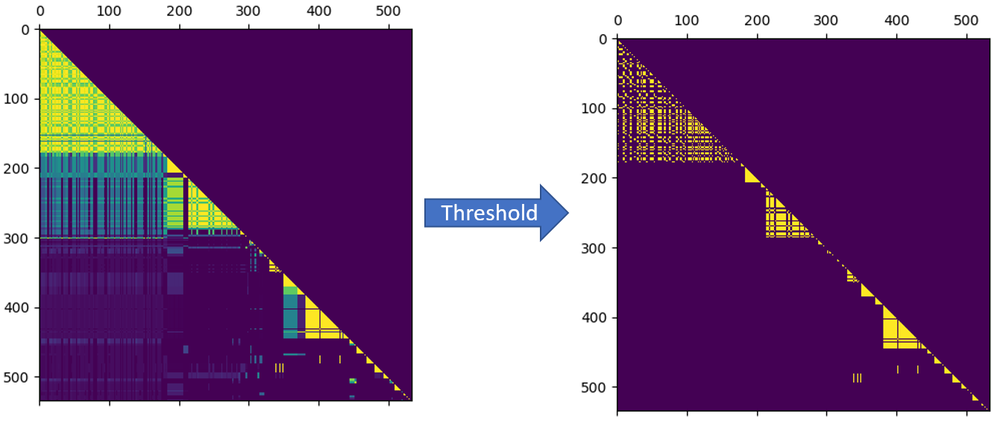

Announcement
I can not go to far due to the confidentiality agreement. Also, I skipped some not critical steps and details. This page may be confusing without details about the scenario. Please contact me if I can do anything to help you understand this algorithm.
Background & Obstacles
1. The firewall rules in the datacenter is not unified. There are some invalid firewall rules and some teams will deploy their firewall rules casually.
2. Hackers will change the firewall rules in several machines, which will be hard to monitor such behavior since there are so many rules.
3. Firewall rules are dynamic. Applications will change firewall rules now and then.
4. There are more then one million firewall rules, manually monitoring is impratical.
5. No one understand all firewall rules in the datacenter. It is hard to label all the firewall rules.
Target
We need to design a method to detect abnormal firewall rules effectively.
Solution
I proposed three assumptions for this scenario. These three assumptions reduce the complexity of the problem significantly, leading to a pratical solution.
- Assumption
1. Most firewall rules are configured reasonably.
2. A group of firewall rules should serve for the same purpose. A single firewall rule can not satisfy the requirement a service.
- Deduction
Here is the key point.
1. Firewall rules serving for the same purpose should have same spatial distribution in the datacenter.
2. If a firewall rule is confirmed to be configured reasonably, another firewall rule that share the same spatial distribution should also be considered as configured reasonably.
- Conclusion
We can use unsupervised learning algorithm to automatically clustering firewall rules into groups. Then we only need to label the group is enough.
Algorithm & Result
- Data representation
Each firewall rule will be represented by a vector which describing its spatial distribution.
Each element in the vector represents how many machines have this firewall rule in this location.
(Location is defined by machines' physical group)
- Clustering
By calculating the similarity of vectors, firewall rules can be clustered unsupervised.

Result of similarity matrix. Yellow Triangles in the diagonal corresponding to normal firewall rules. Red circle represents outliers.
- Result
I did not use names of firewall rules in the algorithm. But firewall rules with similarity names can clustered into same group in the result. This proved that abnormal firewall rules can be detected by spatial distribution.